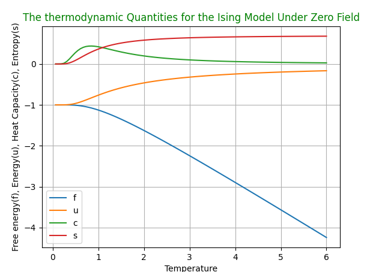

Linguagem: Python;
Bibliotecas utilizadas: Sympy, Numpy e Matplotlib;
Spin: 1/2.
Utilizando as matrizes de Pauli para um sistema de spin-1/2, foi calculado o produto de Kronecker para obter o hamiltoniano e, a partir dele, a função de partição, o que permitiu obter:
• Energia Livre de Helmholtz:
\[ f(T) = -T \ln\left(2 \cosh\left(\frac{1}{T}\right)\right) \]
• Energia Livre
\[ u(T) = -\tanh\left(\frac{1}{T}\right) \]
• Calor Específico
\[ c(T) = \frac{1}{T^{2}} \operatorname{sech} \left( \frac{1}{T} \right)^{2} \]
• Entropia
\[ s(T) = -T \ln\left(2 \cosh\left(\frac{1}{T}\right)\right) - \frac{1}{T} \tanh\left( \frac{1}{T} \right) \]
Utilizando o Matplotlib, foram gerados gráficos para as grandezas mencionadas. A figura resultante é exibida abaixo:
Para visualizar o código, clique abaixo para acessar o meu repositório no GitHub.